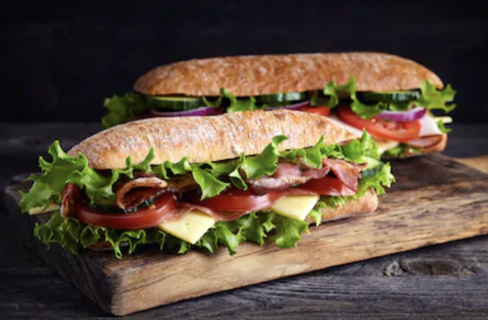
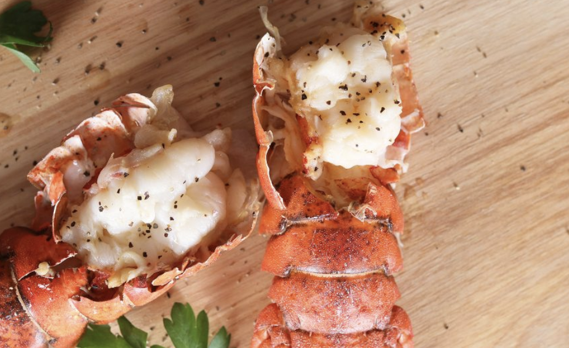

START THE WEEK OFF RIGHT
Everyday Categories
Everyday Food has developed recipes with the home cook in mind. These delicious dishes featured on "RY Paris" call for simple ingredients that you already have in your pantry or can easily find at local grocery stores and farmer's markets.

Breakfast Most important Meal

Vegetarian Lunch Ideas

Cold-Weather Weeknight dinners
Healthy Recipes of the Week
This weeks top award winners to critically-acclaimed recipe gems, check out these original recipes from home cook and professional chefs around the country.

Fajita-Stuffed Peppers

Ree's Breakfast Muffins

Eggplant Parmeasan

Teriyaki Chicken Thighs
Where to Eat
This is not the aspirational fluff of Instagram wall neon; it's fact. Recent surveys have shown that a majorty of travelers consider food first when planning a trip, even ahead of where they sleep. Add to this that people are also traveling more than ever before -- earthlings logged a record-breaking 1.4 billion international trips last year -- and it's safe to say that the hunger for new culinary experiences is more ravenous than ever.
While the endlessly alluring bistros of Paris, izakayas of Tokyo, shawarma stands of Tel Aviv, and tasting menus of Mexico City will always top many people's lists of cravings, we're continually on the lookout for something new to fill our bellies, our passports, and our feeds.

Best Sandwiches in America

50 States of Pizza Slices

City Guides